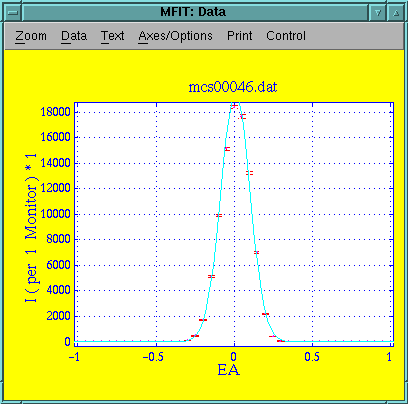
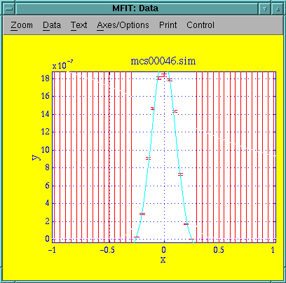
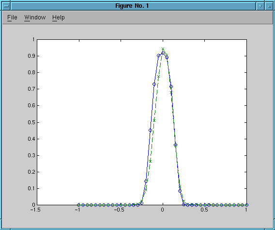

This experiment is an EA-scan in 3-axis focusing mode on the Al2O3 sample. 5meV neutrons with the filter down. Collimation is 60' in the S-A position and open A-D.
Parameter Value Uncertainty Amplitude 1.9454e+04 3.2280e+02 Centre 8.1351e-03 1.2896e-03 Width 9.2876e-02 8.7627e-04 Background 2.0032e+01 3.6476e+00 Chi^2 17.0571 Q(Chi^2) 4.5e-262
Data file: mcs00046-2.sim
Every point from simulation of 2e7 neutrons. Intrument definition alu-3axis.instr revision 1.2.
Parameter Value Uncertainty Amplitude 2.1939e-06 3.7279e-08 Centre -4.7182e-03 1.0285e-03 Width 1.1162e-01 2.7517e-03 Background -1.6395e-07 2.2640e-08 Chi^2 24.9876 Q(Chi^2) 0 